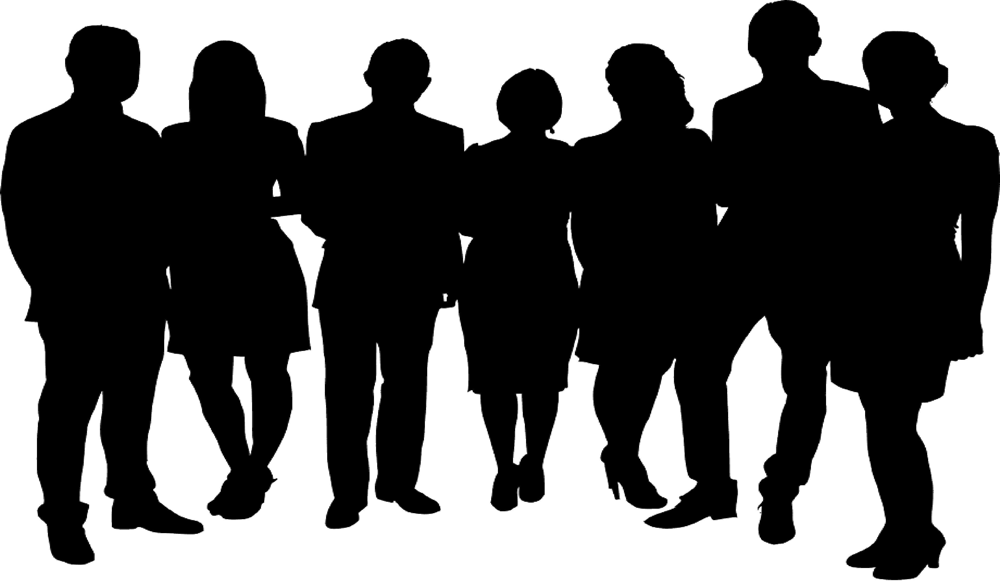

EL ESTUDIO

Somos un estudio de diseño y arquitectura.
Nos gusta generar espacios donde se unen la
estética y la funcionalidad.
Diseñamos espacios modernos y prácticos que
se adaptan a las nuevas formas de habitar de
nuestros clientes. Nos gusta generar espacios
modernos y funcionales. Nuestro objetivo es
lograr espacios cálidos que inviten a habitarlos.
Entendemos nuestra profesión como un
proceso dinámico de diseño en donde la
esencia esta en el vínculo con nuestros clientes.
Valoramos el intercambio de ideas, para que los
proyectos se adapten a sus ideales. La esencia
del estudio esta en la confianza para que el
proceso se lleve a cabo como nuestros clientes
lo soñaron y nosotros lo proyectamos.
EL EQUIPO
MISIÓN
Somos una empresa que garantiza la profesionalidad y calidad de sus trabajos.
Comprometidos con la satisfacción de los clientes, trabajadores y colaboradores, con el crecimiento social,
la conservación del medio ambiente y con el desarrollo profesional y personal de nuestros trabajadores y
trabajadoras.
VISIÓN
Ser una empresa de referencia, responsable, eficiente, comprometida con el medio ambiente y capaz de
competir globalmente.
VALORES
RESPONSABILIDAD
Ofrecemos a cada cliente una vocación de servicio adaptada a sus necesidades y ponemos la arquitectura
a su disposicion.
VOCACIÓN
Basamos nuestro trabajo en la ilusión de hacer arquitectura. Proyecto a proyecto. Tarea a Tarea.
DISEÑO
Cada creación se sustenta en rigor por el trabajo bien hecho y el compromiso social y cultural que el proceso
requiere.
MULTIDISCIPLINAR
Contamos con un equipo multidisciplinario y una red de colaboradores externos en los diferentes ámbitos
profesionales.
INNOVACIÓN
Entendemos la profesión como un escenario heterogéneo en continuo cambio. La docencia y las innovaciones
tecnológicas son nuestras herramientas para seguir el cambio.
SOSTENIBILIDAD
Respeto total por el medio ambiente y el entrono, como decía Vida de la Blanche, ``la naturaleza prepara el sitio,
y el hombre lo organiza de tal manera que satisfaga sus necesidad.